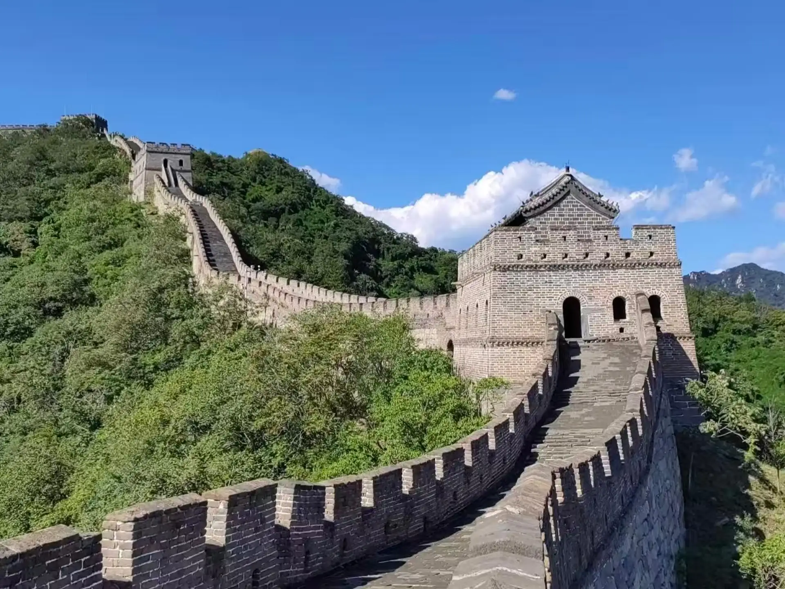

החומה הגדולה של סין
|
החומה הגדולה של סין היא אחד המבנים המרשימים ביותר שנבנו אי פעם בידי אדם, והיא נחשבת לסמל המובהק ביותר של ההיסטוריה הסינית. בנייתה החלה כבר במאה השביעית לפני הספירה ונמשכה לאורך שושלות רבות, כאשר המטרה המרכזית הייתה להגן על הקיסרות מפני פלישות של שבטי נוודים מצפון ולשמש כציר סחר ובקרה על גבולות המדינה. החומה, המשתרעת על פני אלפי קילומטרים בצפון סין, חוצה 15 מחוזות שונים ומורכבת מרשת מורכבת של חומות, מגדלי שמירה ומבצרים שהוקמו מאבנים, לבנים ואדמה דחוסה. אורכה הכולל של החומה על כל חלקיה עומד על כ-21,196 קילומטרים, כאשר הקטע השמור ביותר משושלת מינג נמתח לאורך כ-8,850 קילומטרים – מיישוב שאנהאיגואן לחוף ים בוהאי במזרח ועד למעבר ג'איואיגואן שעל שפת מדבר גובי במערב. כיום, החומה מוכרת כאתר מורשת עולמית של אונסק"ו המושך אליו מיליוני מבקרים. |
 |